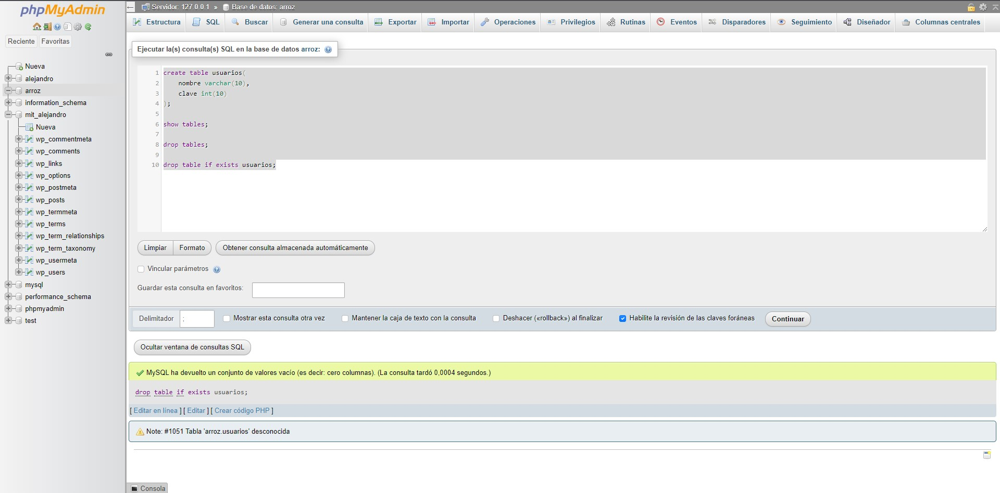

Las Bases De Datos
una base de datos es un conjunto de datos estructurados que pertenecen a un mismo contexto y, en cuanto a su función, se utiliza para administrar de forma electrónica grandes cantidades de información.
aprendí a usar PHP y aprendí estos comandos

Comandos:
- Create table "nombre"(
nombre varchar(10),
clave int(10)
); - show tables;
- drop tables;
- drop table if exists "nombre"